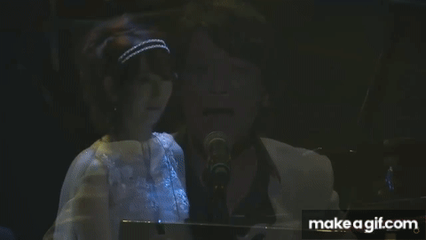

Masayoshi Soken born January 10, 1975 is a Japanese video game composer who has worked for Square Enix since 1998. Soken is best known for being the lead composer and sound director of Final Fantasy XIV and its expansions and lead composer of Final Fantasy XVI.

His music is just amazing the songs he creates perfectly fits into what ever boss fight, area, or side activity his music is put in. However takes alot more than making great music to be My GOAT. Around March of 2020 Soken was diagnosed with cancer. The type was never specifed. He went though treatment for around 6 months. During that time he was still producing music for FFXIV. The community and many people on his team had no idea he had cancer or anything was going on. One of my personal favorite songs was produced during the time he was in the hospital. Then during Fanfest (a big FFXIVv event for announcements) Soken shows up unannounced. He proceeds to get up on stage and perform a song the community Lovingly calls “Laihee” (songs real name "Civlizations") He sings the song horrible while playing 2 otamatones with a pianist in the background just cufused. All this before telling everone he had cancer and he beat it. That is why he is my goat video below if you wanna hear sokens beautiful voice. Click the “Laihee” Below.